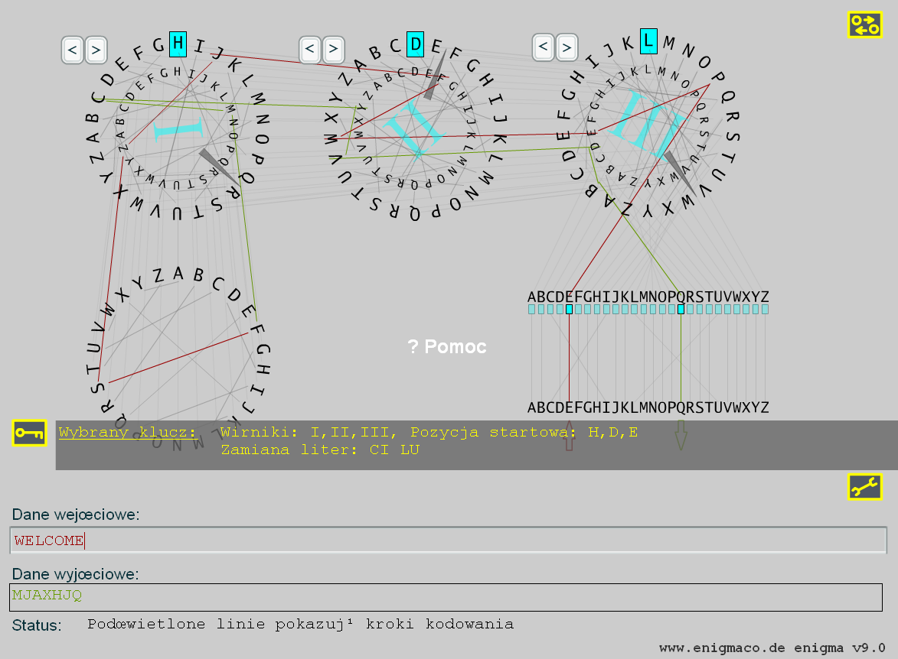

Historia:
Wirnik maszyny "Enigma" zostal stworzony w 1923 roku przez niemieckiego wynalawce Artura Scherbiusa. Powinna byc uzywana do szyfrowania wiadomosci w gospodarce. W latach 30. ubieglego wieku, niemieckie wojsko odkrylo Enigme, dodalo tzw. poklad wtyczki i zmodyfikowalo polaczenia wirnika. W II wojnie swiatowej niemiecka machineria wojenna uzywala okolo 200.000 takich systemów szyfrowania w celu zapewnienia wymiany informacji tajnych.
Uklad i funkcja:
Enigma sklada sie glównie z klawiatury, plugboardu, trzech wirnikow (tzw. rolki) i tzw reflektorow, który mial przekierowac pradu elektryczny. Maszyna oryginalna ustawiala kazda litere wprowadzana przez klawiature do litery szyfrowanej ktora zostala na nowo skonfigurowana w stale zamknieteym ukladzie.
Uklad graficzny elementów:
Uklad trzech wirników zostala przeprowadzona tak jak w prawdziwej enigmie: jako pierwszy wirnik ("wirnik szybki", który zmienia sie z kazda pozycje), jest zwany prawy. Cyfry rzymskie, który znajduja sie na srodku kazdego wirnika, pokazuja który z 5 wirników (I, II, III, IV lub V) jest uzywany. Polaczenie kazdego wirnika odpowiada oryginalnym Enigma.
Wymagania systemowe:
Potrzebny jest szybki komputer, rozdzielczosc 800x600 pikseli, glebokosc true-color i Flash plug-in (wersja 7 lub wyzsza).
Krótki przyklad:
Otwórz okno maszyny, nalezy kliknac na pole tekstowe "Wejscie" i wpisz "c" na klawiaturze. Plugboard pisze C jako C natomiast podkresla polaczenie na czerwono.Prad elektryczny nastepnie przenosi sie do wirnika po prawej stronie, czyli na swoja litere A. A jest zwiazana z B. Obecnie wchodzi na srodek wirnika, który laczy G z R. Trzeci (po lewej) wirnik mapy V z I. Teraz reflecor laczy B z R. Wtedy wraca po zielonym przewodzie przez wirniki z powrotem do plugboarda, gdzie Q prowadzi do Q. W rezultacie mamy do szyfrowanie C do Q.
Jesli teraz wpiszesz ponownie "c", widac ze w tym przypadku resultat jest G! To dlatego, ze z prawej strony wirnik porusza sie o jeden krok(litere) w lewo.
Szczególny przypadek: w przypadku, gdy prawy wirnik porusza sie z V do W, drugi rotor równiez zmienia stanowisko o jeden krok. Odnosi sie to do polowy wirnikow. Reasumujac, wirniki zachowuja sie jak przebieg.
Jak moge szyfrowac tekst?:
Najpierw trzeba uzupelnic klucz. W tym przypadku klucz sklada sie z dwóch czesci, pierwsza zdecydoje, która para liter powinna byc wymieniana w plugboardzie, np. A do B oraz F do X. Po drugie, nalezy wybrac na poczatku wprowadzania tekstu ustawienia wirnika, np. F-E-S. Kliknij przycisk "RESET", który ustawia cala maszyne w "stanu wyjsciowy". Teraz mozesz zaszyfrowac pierwszy tekst.
Teraz przeciagnij male zólte kólko pod A do B i przycisnij myszke. Wymieniles A i B. Prosze wymien F i X w ten sam sposób.
Wymiana ustawienia wirnika za pomoca przycisków "<" lub ">" powyzej kazdego wirnika. Kazde klikniecie myszki przestawia wirnik o jedna pozycje do przodu we wskazanym kierunku.
Teraz wpisz klucz w "Welcome". "Output" powinien pokazac szyfrogram "DBRZNUP". Z wyjatkiem liczby liter, zaszyfrowany tekst wyglada zupelnie inaczej.

Jak moge odszyfrowac tekst?:
Nalezy wspomniec, ze mamy tutaj do czynienia z systemu szyfrowania symetrycznego. Szyfrowanie symetryczne oznacza, ze do szyfrowania i deszyfrowania potrzeba dokladnie ten sam klucz. Aby to udowodnic w naszym przykladzie, zachowaj na uwadze tekst tajny "DBRZNUP", wyczysc zawartosc wiersza "Input:" i wprowadz powyzszy tekst szyfrowy. Resultat jest "WELCOME", który jest tekstem jawnym.
Ograniczenia modelu:
Dla tych sposród was, którzy chca wiedziec nieco wiecej na temat Enigmy, nie chce ukryc pewne tu wprowadzone uproszczenia. Pierwotna Enigma pozwolila na zmiane ustawienia tak zwanego pierscienia, który zawieral zmiany w alfabecie o maksymalnie 25 liter.
W koncu byl czwarty wirnik Enigmy, który zostal opracowany pod koniec II wojny swiatowej w celu jeszcze lepszej ochrony wiadomosci U-Bootow.
Linki:
W zakresie szczególowo nastepujace
Enigmasimulation bardzo zalecane (tutaj zamiast Java wykorzystano Flash). Mozesz porównac kod dwuch innych symulatorow. Nalezy pamietac, ze w "Advanced Settings" applet w reflektor z "C" do "B" musi odpowiadac konfiguracji mojej symulacji Flash. Reflektor "C" jest uzywany jedynie do czterech wirnikach Enigmy, które równiez moga byc symulowane z tym apletem.
Innym bardzo interesujacy jest Jima Orama www.enigma-replica.com, gdzie mozna zobaczyc postep Jima w odbudowie czterech wirników Enigmy (M4).